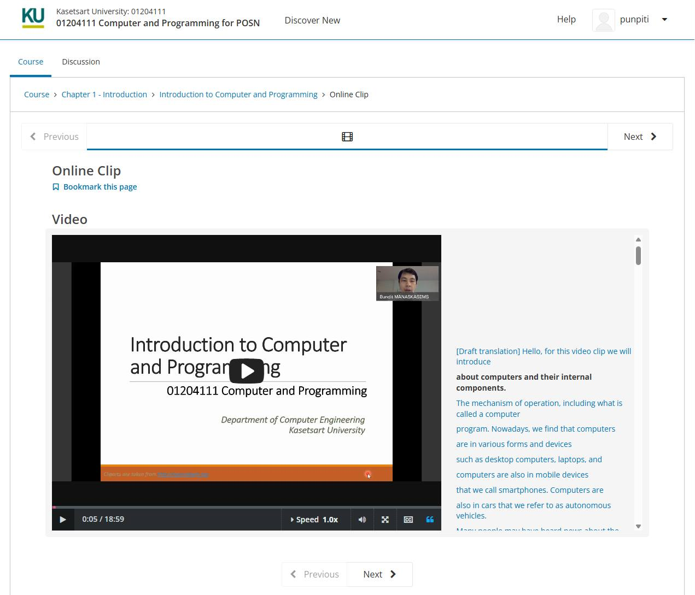

คอร์สออนไลน์ฟรีสำหรับ สอวน.คอมพิวเตอร์ คือการขยายโอกาสจากห้องเรียนมหาวิทยาลัยสู่สาธารณะ
{kind=link}

บทความนี้สะท้อนแนวคิดสำคัญมากของการพัฒนาคน คือการเอาเนื้อหาที่สอนจริงในมหาวิทยาลัย มาปรับเป็นคอร์สออนไลน์ฟรีสำหรับนักเรียนที่สนใจค่าย สอวน.คอมพิวเตอร์ เพื่อให้การเตรียมตัวไม่ได้ขึ้นอยู่กับต้นทุนส่วนตัวหรือการเข้าถึงทรัพยากรในบางพื้นที่เท่านั้น
ประเด็นที่น่าสนใจอีกด้านคือ ผู้เขียนไม่ได้มองคอร์สนี้เป็นเพียงเครื่องมือเตรียมสอบ แต่เป็นสะพานเชื่อมเข้าสู่มหาวิทยาลัย เพราะถ้าเรียนจนคล่องในระดับที่คาดว่าจะได้เกรด A ก็สามารถต่อยอดไปสู่การลงทะเบียนเรียนล่วงหน้ากับตัวเต็มของมหาวิทยาลัย และหากเข้ามาเรียนที่ มก. ก็ยังเอาเกรดไปใช้ได้จริง
หัวใจของโพสต์นี้คือการทำให้ความรู้พื้นฐานด้านการเขียนโปรแกรมเข้าถึงได้ฟรี โดยใช้ศักยภาพของคณาจารย์และรายวิชาจริงของมหาวิทยาลัยมาสร้างทางเลือกให้กับนักเรียนที่อยากพัฒนาตัวเองก่อนเข้าค่ายหรือก่อนเข้าสู่เส้นทางสายคอมพิวเตอร์
มหาวิทยาลัยไม่ได้มีหน้าที่แค่สอนคนที่เข้ามาแล้ว แต่ควรขยายโอกาสออกไปก่อนหน้านั้น
สิ่งที่ดีมากของบทความนี้คือการขยับบทบาทของภาควิชาจากการสอนเฉพาะนิสิตในระบบ ไปสู่การช่วยสร้าง public learning infrastructure ให้กับนักเรียนที่ยังไม่ได้อยู่ในมหาวิทยาลัย แต่มีศักยภาพและความสนใจในเส้นทางนี้
มุมนี้ทำให้คอร์สออนไลน์ไม่ได้เป็นเพียงสื่อการเรียนอีกชิ้นหนึ่ง แต่เป็นการเปิดประตูให้ talent จากภายนอกได้เริ่มต้นอย่างมีมาตรฐานเดียวกับที่ใช้ในห้องเรียนจริง
แม้ยุคนี้มี AI เขียนโปรแกรมได้ แต่การเขียนโปรแกรมเป็นยังไม่ใช่เรื่องต่อรองได้
ประโยคที่ตรงและชัดมากของโพสต์นี้คือ แม้ยุคนี้ใช้ AI เขียนโปรแกรมได้ แต่มันไม่ได้ทำได้ทั้งหมด และถ้าจะเรียนสายคอมพ์แต่เขียนไม่เป็น ก็ควรไปเรียนอย่างอื่นดีกว่า ประเด็นนี้สะท้อนว่าผู้เขียนมอง การเขียนโปรแกรมเป็น ว่าเป็นทักษะฐานที่ยังจำเป็นต่อการคิดและทำงานจริง
มุมนี้ไม่ได้ปฏิเสธ AI แต่ยืนยันว่าการใช้ AI อย่างมีคุณภาพต้องตั้งอยู่บนความเข้าใจพื้นฐานที่มั่นคง มิฉะนั้นผู้เรียนจะกลายเป็นเพียงผู้ใช้เครื่องมือ โดยไม่สามารถประเมินหรือควบคุมผลลัพธ์ได้
คอร์สฟรีที่ดีควรเป็นทั้งจุดเริ่มต้นและเส้นทางต่อยอด
ข้อสรุปของบทความนี้อยู่ที่การออกแบบเส้นทางที่ต่อเนื่อง: เริ่มจากคอร์สฟรีสำหรับผู้สนใจ สู่การเรียนล่วงหน้าในระบบมหาวิทยาลัย และต่อไปสู่การใช้ผลการเรียนจริงหากเข้าศึกษาต่อ มุมนี้ทำให้คอร์สออนไลน์กลายเป็น pathway ไม่ใช่แค่ content
เมื่อมองแบบนี้ โพสต์นี้จึงเป็นตัวอย่างที่ดีของการใช้ทรัพยากรทางวิชาการของมหาวิทยาลัยเพื่อขยายโอกาส สร้างฐานคน และเชื่อม talent เข้าสู่ระบบการศึกษาที่มีคุณภาพได้อย่างเป็นรูปธรรม